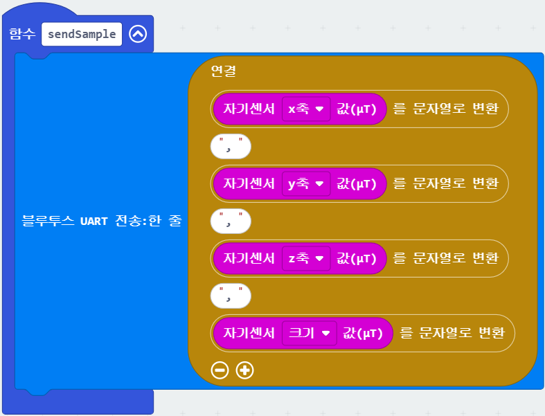

이 문서는 웹앱의 MakeCode에서 편집하기 버튼을 눌렀을 때 사용자가 어떤 순서로 MakeCode 프로젝트를 열고, 필요한 만큼 수정하고, HEX 파일을 받아 micro:bit에 넣는지 안내합니다.
- 프로젝트 열기 웹앱 사용 안내에서 MakeCode 공유 프로젝트를 새 탭으로 엽니다.
- 편집 또는 확인 MakeCode 편집창에서 템플릿 코드를 확인하거나 고칩니다.
-
HEX 다운로드
MakeCode의 Download 버튼으로
.hex파일을 받습니다. - 웹앱 연결 micro:bit에 HEX를 넣고 대시보드에서 디바이스 연결을 누릅니다.
1. 웹앱에서 MakeCode 열기
- 대시보드 상단의 사용 안내를 엽니다.
- MakeCode에서 편집하기 버튼을 누릅니다.
- 새 탭에서 MakeCode 편집창이 열리고 템플릿 프로젝트가 로드될 때까지 기다립니다.
- 필요한 부분을 확인하거나 수정한 뒤 Download 버튼으로 HEX 파일을 받습니다.
- 사용 안내 대시보드에서 안내 창을 엽니다.
- MakeCode 열기 버튼을 눌러 새 탭으로 이동합니다.
- 확인/수정 편집창에서 템플릿 코드를 봅니다.
- Download HEX 파일을 내려받습니다.
2. MakeCode에서 확인할 것
기본 magnet 예제는 Bluetooth로 자기장 값을 x,y,z,strength 순서의
숫자로 한 줄씩 보냅니다. 자기장 대신 다른 센서 값을 넣으면 마이크로비트는 그 값을 숫자로 전송합니다.
필수 규칙
- 웹앱이 연결되면 펌웨어는 시작 명령
start를 받습니다. - micro:bit는 센서 값을 쉼표로 구분한 한 줄로 보냅니다.
- 값의 개수와 순서는 웹앱 실험 설정의 CSV 필드 순서와 같아야 합니다.

실험 설정의 CSV 필드 예시
MakeCode 블록이 위의 예시처럼 x,y,z,strength 순서로 값을 보내면, 웹앱의 실험 설정도
아래처럼 같은 순서로 두어야 합니다. MakeCode 블록의 순서와 갯수를 실험 설정과 맞추면 됩니다.
필드 1
필드 2
필드 3
필드 4
3. HEX 파일을 micro:bit에 넣기
- micro:bit를 USB 케이블로 컴퓨터에 연결합니다.
- 컴퓨터에 MICROBIT 드라이브가 나타나는지 확인합니다.
- MakeCode 화면 아래쪽의 Download 버튼을 누릅니다.
- 브라우저가 받은
microbit-xxxx.hex파일을 MICROBIT 드라이브로 복사합니다. - 복사가 끝나면 micro:bit가 자동으로 다시 시작합니다. LED 표시가 안정될 때까지 잠시 기다립니다.
참고: MakeCode에서 마이크로비트를 직접 USB로 페어링하면 Download 버튼으로 바로 전송할 수도 있습니다.
4. 웹앱으로 돌아와 연결하기
- 대시보드 탭으로 돌아옵니다.
- 디바이스 연결 버튼을 누르고 목록에서 BBC micro:bit를 선택합니다.
- Bluetooth 또는 위치 권한 요청이 나오면 허용합니다. Android에서는 위치 권한이 켜져 있어야 검색됩니다.
- 첫 데이터가 들어오면 카드, 그래프, 데이터 로그가 자동으로 바뀝니다.
- 수업 기록이 필요하면 화면 하단의 CSV 다운로드 버튼을 누릅니다.